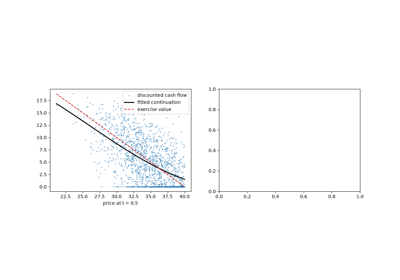

Examples#
This gallery walks through every public feature of
financialkit.exotic_options: barrier options from Merton’s image
formula to discrete monitoring, binary options, Asian options,
lookbacks and variance swaps, compound, forward-start and chooser
options, options on two assets, and American options by least-squares
Monte Carlo. Each script illustrates one dated breakthrough from the
history page.
Each script in this gallery is self-contained and can be run directly with
python examples/exotic_options/<section>/<script>.py.
Sections#
barriers – Merton’s down-and-out call, the Reiner-Rubinstein formulas, Ikeda-Kunitomo double barriers and the Broadie-Glasserman-Kou correction for discrete monitoring.
binaries – cash-or-nothing, asset-or-nothing, gap and one-touch options.
asian – Kemna-Vorst geometric averages and control variates, and Turnbull-Wakeman moment matching.
path_dependent – floating and fixed lookbacks and variance swaps.
compound – Geske compound options, forward starts and choosers.
multi_asset – Margrabe exchange options, Stulz options on the maximum and minimum, and quantos.
american – Longstaff-Schwartz least-squares Monte Carlo.
American options by simulation#
Longstaff and Schwartz’s least-squares Monte Carlo for early exercise.

Longstaff-Schwartz least-squares Monte Carlo
Asian options#
Options on an average price: the geometric closed form, the arithmetic average by Monte Carlo with the geometric control variate, and lognormal moment matching.
Barrier options#
Options that die or come alive when the price touches a level: Merton’s image solution, the Reiner-Rubinstein family of closed forms, double barriers and the correction for barriers checked only at discrete dates.
Binary options#
All-or-nothing payoffs, the building blocks into which Reiner and Rubinstein decomposed vanilla and barrier options.
Compound, forward-start and chooser options#
Options whose payoff is itself an option: Geske’s options on options, Rubinstein’s forward-start options and choosers.
Options on two assets#
Exchange options, options on the better or worse of two assets, and quantos paid in another currency.
Lookbacks and variance swaps#
Payoffs on the extremes of the path, and on its realized variance: floating and fixed-strike lookbacks, and the replication of a variance swap by a strip of options.